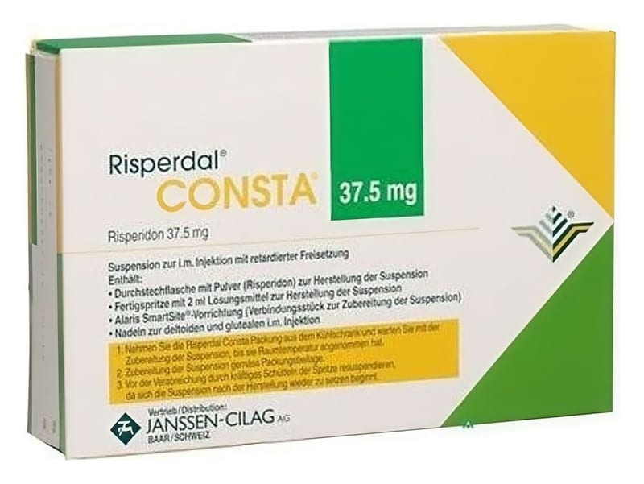

RISPERDAL CONSTA 37,5 mg IM ENJEKSİYONLUK UZATILMIŞ SALIMLI SÜSPANSİYON, 1 ADET

Ne için kullanılır
KT · Bölüm 1Bu Kullanma Talimatı'nın bölümleri henüz ayrıştırılmadı; tam metin alt bilgideki TİTCK PDF bağlantısında.

Bu Kullanma Talimatı'nın bölümleri henüz ayrıştırılmadı; tam metin alt bilgideki TİTCK PDF bağlantısında.